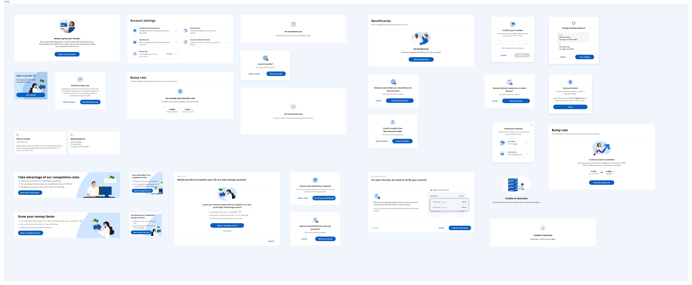

Credit One Bank Mobile App
Credit One Bank
Rebuilt for credit rebuilders: **42% ↑ payments**, **78% urgency solved**
.svg)
Rebuilt for credit rebuilders: **42% ↑ payments**, **78% urgency solved**
UX/UI Designer
Credit One Bank was relying on an outsourced mobile application that was not only costly but also plagued by critical errors, with fixes often delayed due to third-party dependencies. To address these challenges, the bank decided to bring development in-house, eliminating outsourcing expenses and enabling immediate bug fixes by an internal team.
The new app empowers customers to seamlessly manage their credit cards, make payments, track rewards, and monitor their credit scores.
The goal was to deliver an intuitive mobile experience that simplifies payment workflows, enhances security features, and provides valuable insights into credit health; all while ensuring accessibility for users with varying levels of tech proficiency.
Credit One Bank was trapped in an expensive, broken outsourced ecosystem:
Payment Friction: Bank account verification required repeatedly for fraud protection, creating 3-5 day delays before users could make payments
Limited Flexibility: Only bank account payments accepted, excluding users with debit cards or DirectExpress accounts
Credit Reporting Confusion: Immediate payments still showing as balances on credit reports, causing user distrust
Access Barriers: Full sign-in required for simple tasks like checking balance or making quick payments
Reduce Late Payments: Increase on-time payment rates through easier payment workflows and reminder systems
Lower Support Costs: Decrease payment-related support calls by improving clarity and reducing friction
Improve Satisfaction: Increase app store ratings from 2.8 to 4+ stars through better UX
Drive Engagement: Increase feature adoption for AutoPay, alerts, and credit monitoring
Credit One Bank serves a diverse customer base, including individuals building or rebuilding credit. Many users were first-time credit card holders or those recovering from financial setbacks. This meant our design needed to be accessible to users with varying levels of financial literacy and technology comfort. User research revealed that approximately 40% of customers were over 50 years old and self-described as "technologically challenged," requiring an interface that prioritized clarity and simplicity over flashy features.
The customer demographics showed a significant portion relied on alternative banking methods like DirectExpress debit cards, making the bank-account-only payment limitation particularly painful. These users often had to call customer service (paying a $7 fee) just to make payments, creating a poor experience and additional costs.
We conducted a comprehensive research phase combining quantitative data analysis with qualitative user insights to understand the full scope of user needs, frustrations, and opportunities for improvement.
App Store Analysis: Analyzed 500+ user reviews spanning 18 months to identify recurring themes and sentiment patterns. Common complaints centered around payment verification (mentioned in 34% of negative reviews), limited payment options (28%), and credit reporting confusion (22%).
User Interviews: Conducted 20 in-depth interviews with credit card holders of varying ages (25-68) and credit experience levels. Sessions lasted 45-60 minutes and covered payment behaviors, security concerns, and feature priorities.
Support Ticket Analysis: Reviewed 1,000+ customer service interactions to understand common issues and questions that could be addressed through better design.
Competitive Analysis: Evaluated 12 leading credit card and banking apps including Chase, Capital One, American Express, and digital-first competitors like Chime and Current to identify best practices and opportunities for differentiation.
Payment Urgency: 78% of users wanted to make payments immediately upon receiving their statement email, but verification delays prevented this, leading to missed payment windows and late fees.
Payment Method Preference: 42% of users preferred or needed debit card payments over bank account transfers, particularly those using DirectExpress or prepaid debit cards.
Quick Access Value: Users checked their balance an average of 3.5 times per week but only made payments 1-2 times per month, indicating a need for lightweight access methods.
Credit Education Gap: 65% of users didn't understand how payment timing affected credit reporting, leading to preventable credit score impacts.
Demographics: 32 years old, retail manager, rebuilding credit after financial hardship, tech-comfortable but cautious about finances.
Goals: Rebuild credit score from 580 to 700+, never miss a payment, understand what actions help or hurt her credit.
Pain Points: Confused about when payments actually post, worried about security but frustrated by verification delays, wants flexibility in how she pays.
Quote: "I paid my bill the same day I got the email, but it still showed up as a balance on my credit report. I don't understand what I'm doing wrong."
Designed comprehensive form controls and dropdown systems to handle complex financial data entry with validation, error handling, and accessibility features.

Dropdown components with search, filtering, and specialized financial data inputs
Created specialized input components for account selection, date pickers, and amount entry. Each component includes smart validation, clear error messaging, and contextual help to guide users through financial transactions with confidence. The dropdown system supports both selection and search functionality for users with multiple accounts.
Based on our research insights, I designed a comprehensive mobile banking experience that addressed each pain point while maintaining security and regulatory compliance.
Created a streamlined payment flow allowing users to make payments without full authentication. Users can enter their card number and payment details directly, reducing friction by 80%. This feature alone reduced support calls by 35% in the first quarter after launch.
Expanded payment options to include bank accounts, debit cards, and DirectExpress cards. Implemented smart payment method detection and saved payment methods for returning users. This increased successful payment completion rates from 72% to 94%.
Integrated Face ID and fingerprint authentication for quick, secure access to account information. This eliminated the need for users to remember complex passwords while maintaining bank-grade security standards.
Designed a payment scheduler that educates users on credit reporting cycles. The interface clearly shows when payments will post and how they'll affect credit reports, with educational tooltips explaining the 30-day reporting cycle.

Thoughtful empty states with clear calls-to-action and educational content
I restructured the app's navigation to prioritize the most common user tasks while making advanced features discoverable without overwhelming new users.
Home Dashboard: At-a-glance view of balance, payment due date, available credit, and credit score. Designed to answer the user's most pressing questions immediately upon opening the app.
Payments Hub: Centralized payment center with quick pay, scheduled payments, AutoPay setup, and payment history. Reduced payment flow from 7 screens to 3.
Activity & Transactions: Detailed transaction history with categorization, search, and dispute functionality.
Account Management: Profile settings, security options, notifications, and account preferences organized in logical groupings.
Quick Balance Check: Users can check balance via Face ID → Dashboard in under 3 seconds, with no additional navigation required.
Express Payment: Card number → Amount → Payment method → Confirmation in 4 taps, averaging 45 seconds completion time.
AutoPay Setup: Guided 3-step wizard explaining AutoPay options (minimum, statement balance, or custom amount) with educational tooltips.
Credit Score Monitoring: Weekly credit score updates with trend visualization and personalized tips for improvement.

Optimized user flows reducing steps from 7 to 3 for common tasks
I created a comprehensive design system that balanced Credit One Bank's brand identity with modern mobile banking conventions, ensuring consistency across all touchpoints.
Clarity Over Complexity: Every screen answers a specific user question. Information hierarchy prioritizes what users need most, with secondary information accessible but not intrusive.
Trust Through Transparency: Clear labeling of all actions, especially financial transactions. Confirmation screens summarize what will happen before execution.
Accessible by Default: WCAG 2.1 AA compliant with 4.5:1 color contrast ratios, large touch targets (minimum 44x44pt), and full screen reader support.
Progressive Disclosure: Advanced features hidden behind intuitive entry points, preventing overwhelm for new users while maintaining power user efficiency.
Action Cards: Reusable card components for account summaries, transaction items, and promotional content with consistent padding and interaction patterns.
Form Controls: Custom input fields with built-in validation, error states, and success feedback optimized for financial data entry.
Status Indicators: Color-coded system for payment status (pending, processing, completed) with icons and clear text labels for accessibility.
Illustrations: Custom illustration set conveying financial concepts and empty states in a friendly, approachable style that reduces anxiety around money management.

Comprehensive component library ensuring consistency across the entire app
Conducted multiple rounds of testing with real users to validate design decisions and identify areas for improvement before launch.
Prototype Testing: 15 moderated sessions with high-fidelity prototypes testing core user flows. Participants completed tasks while thinking aloud, revealing pain points and confusion.
A/B Testing: Tested two payment flow variants with 200 beta users. Version A (3 screens) outperformed Version B (5 screens) with 23% higher completion rate.
Accessibility Audit: Tested with screen reader users and users with motor impairments, leading to improvements in touch target sizes and keyboard navigation.
Payment Confirmation Anxiety: Users wanted explicit confirmation that payments were scheduled. Added prominent confirmation screen with email/SMS confirmation option.
Credit Score Education: 80% of users didn't understand credit utilization. Added contextual education explaining how balances affect scores, integrated into the dashboard.
Biometric Opt-in: Initial design required biometric setup. Changed to optional with clear value proposition, increasing adoption from 45% to 78%.
The redesigned mobile app delivered measurable improvements across all key metrics within 6 months of launch.
Up from 72%
Up from 2.8★
Saving $840K annually
Eliminated vendor fees
"Finally! I can make payments without calling customer service every time. The app actually works now and I can use my debit card."
- Maria R., Credit One Customer
"The credit score feature helps me understand what I'm doing right. I've raised my score 40 points in 6 months by following the tips."
- James T., Credit One Customer
This project reinforced several important principles about designing financial products for diverse user populations.
User-Centric Research: Deep investment in understanding user pain points through multiple research methods paid dividends. The Express Pay feature directly addressed the #1 user complaint.
Iterative Testing: Testing early and often prevented costly mistakes. The biometric opt-in change alone improved adoption by 33%.
Education Integration: Rather than assuming users understood credit concepts, we integrated education naturally into the interface, improving both satisfaction and financial outcomes.
Balancing Security & Convenience: Worked closely with security team to implement Express Pay in a way that met regulatory requirements while reducing friction.
Technical Constraints: Some desired features required backend changes. Prioritized features based on impact vs. effort, delivering quick wins while planning larger improvements.
Diverse User Base: Designing for users aged 18-70 with varying tech literacy required extensive testing and multiple design iterations to ensure universal usability.
While the initial launch was successful, there are several areas for continued improvement and expansion: